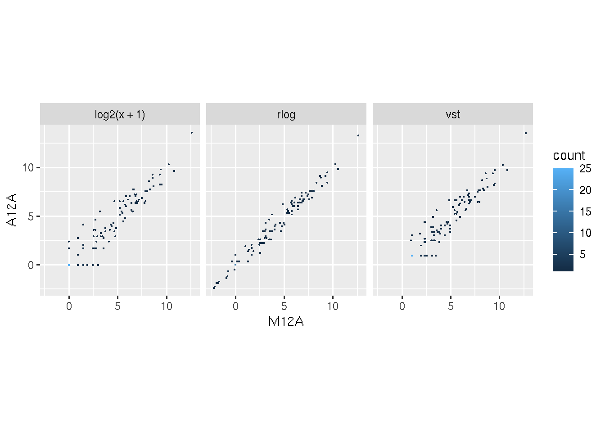
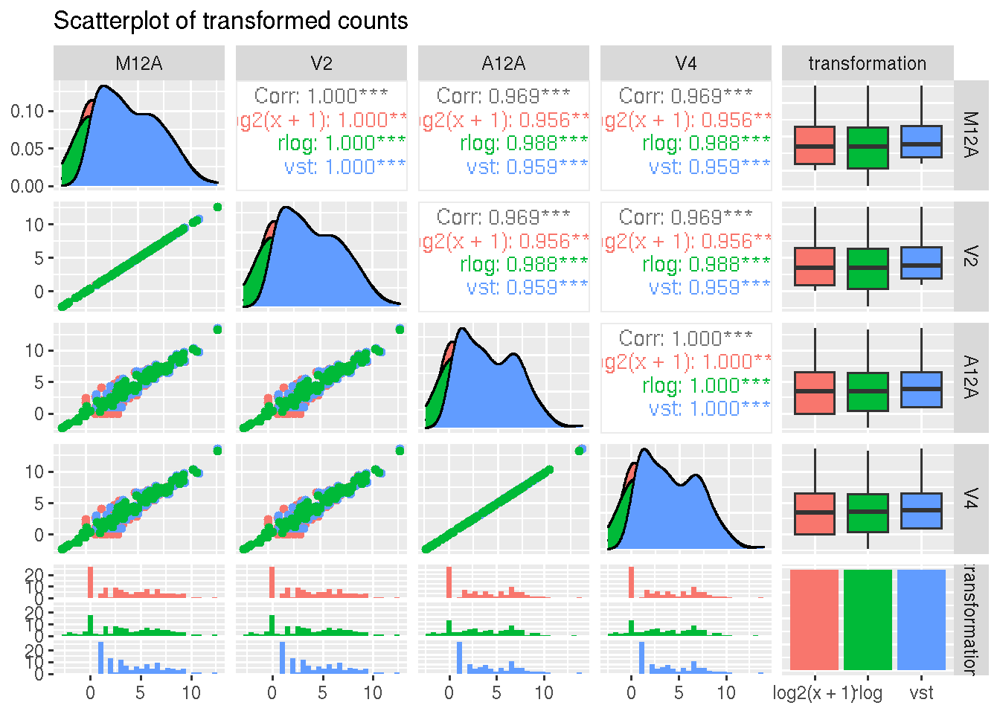
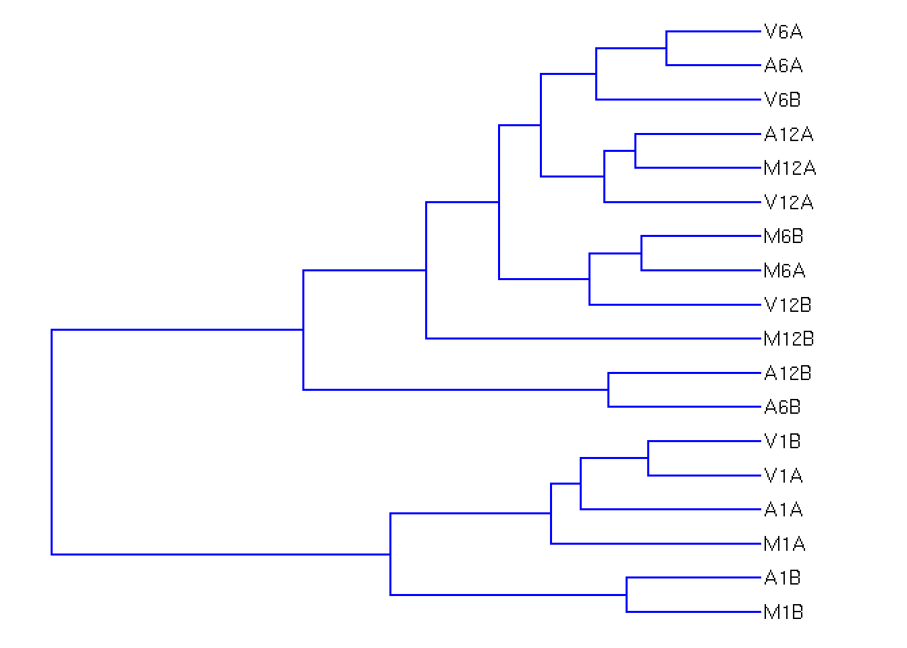
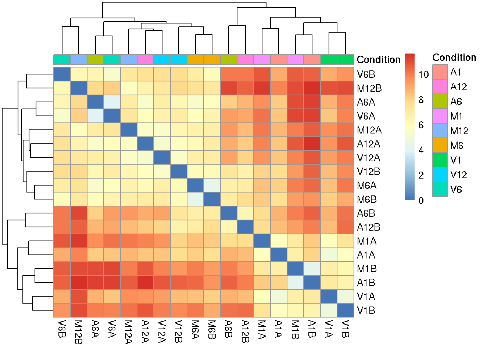
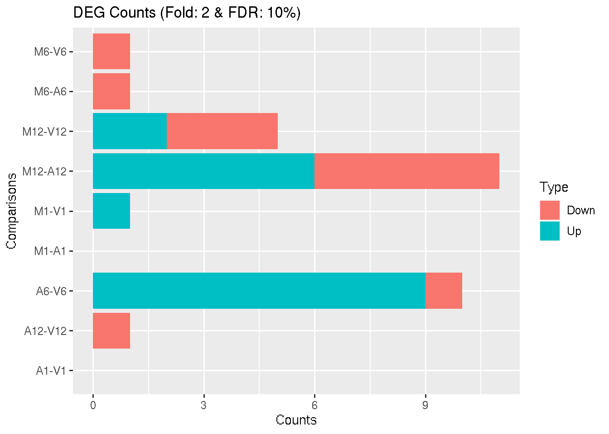
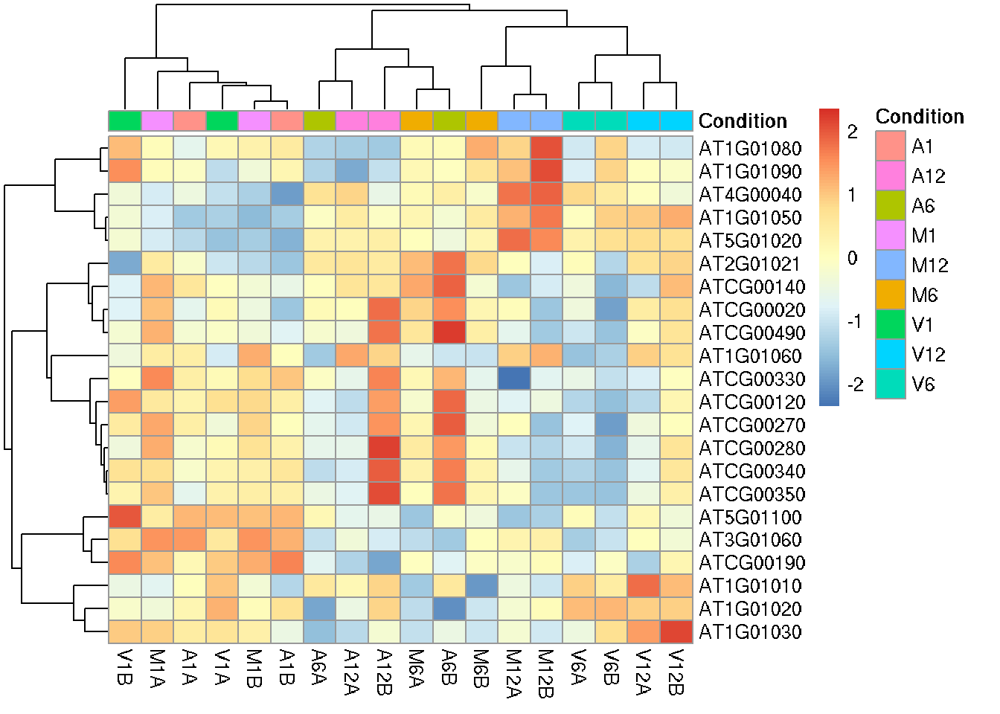
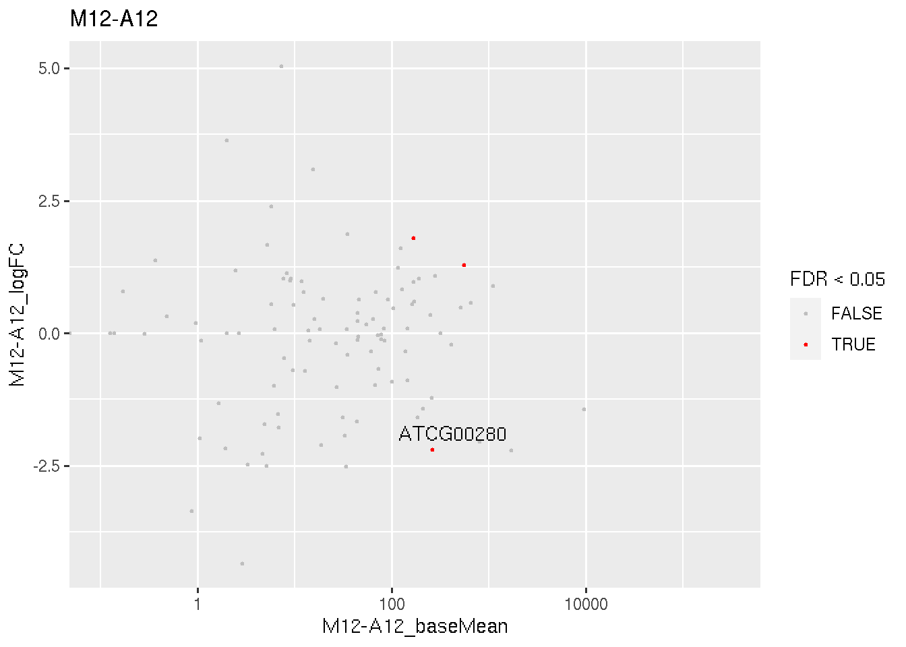
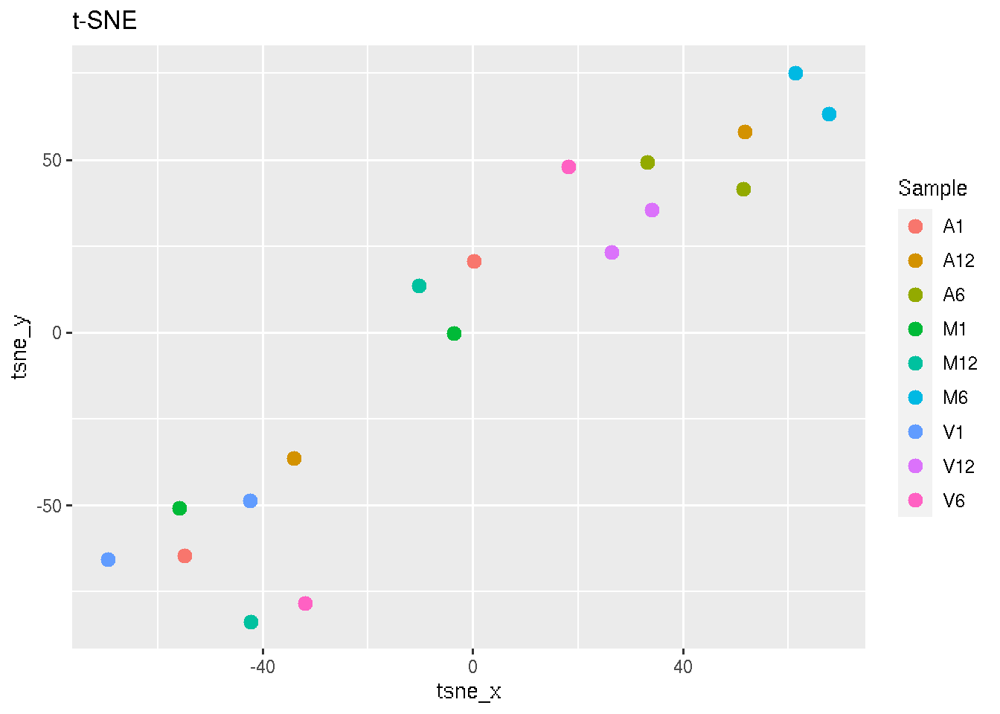

SPR Data Visualization
Data Visualization with systemPipeR
Metadata and Reads Counting Information
The first step is importing the targets file and raw reads counting table.
- The
targetsfile defines all FASTQ files and sample comparisons of the analysis workflow. - The raw reads counting table represents all the reads that map to gene (row) for each sample (columns).
## Targets file
targetspath <- system.file("extdata", "targets.txt", package = "systemPipeR")
targets <- read.delim(targetspath, comment = "#")
cmp <- systemPipeR::readComp(file = targetspath, format = "matrix", delim = "-")
## Count table file
countMatrixPath <- system.file("extdata", "countDFeByg.xls", package = "systemPipeR")
countMatrix <- read.delim(countMatrixPath, row.names = 1)
systemPipeR::showDT(targets)
head(countMatrix)
## M1A M1B A1A A1B V1A V1B M6A M6B A6A A6B V6A V6B M12A M12B A12A A12B
## AT1G01010 57 244 201 169 365 229 41 38 152 46 294 405 117 139 132 64
## AT1G01020 23 93 69 126 107 88 18 25 20 5 88 151 43 74 33 18
## AT1G01030 41 98 73 58 94 156 9 13 8 6 36 147 32 29 12 9
## AT1G01040 180 684 522 664 585 680 162 163 249 66 697 1060 338 604 360 80
## AT1G01050 60 127 102 166 125 303 116 180 139 37 236 679 362 746 194 50
## AT1G01060 26 264 59 56 8 26 5 2 0 0 0 4 89 203 118 24
## V12A V12B
## AT1G01010 230 120
## AT1G01020 43 31
## AT1G01030 70 85
## AT1G01040 203 171
## AT1G01050 214 181
## AT1G01060 62 32
Data Transformation
For gene differential expression, raw counts are required, however for data
visualization or clustering, it can be useful to work with transformed count data.
exploreDDS function is convenience wrapper to transform raw read counts using the
DESeq2 package transformations methods. The input file
has to contain all the genes, not just differentially expressed ones.
exploredds <- exploreDDS(countMatrix, targets, cmp = cmp[[1]], preFilter = NULL,
transformationMethod = "rlog")
exploredds
## class: DESeqTransform
## dim: 116 18
## metadata(1): version
## assays(1): ''
## rownames(116): AT1G01010 AT1G01020 ... ATMG00180 ATMG00200
## rowData names(51): baseMean baseVar ... dispFit rlogIntercept
## colnames(18): M1A M1B ... V12A V12B
## colData names(2): condition sizeFactor
Users are strongly encouraged to consult the DESeq2 vignette for
more detailed information on this topic and how to properly run DESeq2 on data
sets with more complex experimental designs.
Scatterplot
To decide which transformation to choose, we can visualize the transformation effect comparing two samples or a grid of all samples, as follows:
exploreDDSplot(countMatrix, targets, cmp = cmp[[1]], preFilter = NULL, samples = c("M12A",
"A12A"), scattermatrix = FALSE)

exploreDDSplot(countMatrix, targets, cmp = cmp[[1]], preFilter = NULL, samples = c("M12A",
"M12A", "A12A", "A12A"), scattermatrix = TRUE)

The scatterplots are created using the log2 transform normalized reads count,
variance stabilizing transformation (VST) (Anders and Huber 2010), and regularized-logarithm transformation
or rlog (Love, Huber, and Anders 2014).
Hierarchical Clustering Dendrogram
The following computes the sample-wise correlation coefficients using the stats::cor()
function from the transformed expression values. After transformation to a distance matrix,
hierarchical clustering is performed with the stats::hclust function and the
result is plotted as a dendrogram, as follows:
hclustplot(exploredds, method = "spearman", savePlot = TRUE, filePlot = "cor.png")
## Saving 5.6 x 4 in image


The function provides the utility to save the plot automatically.
Hierarchical Clustering HeatMap
This function performs hierarchical clustering on the transformed expression matrix
generated within the DESeq2 package. It uses, by default, a Pearson correlation-based distance
measure and complete linkage for cluster join.
If samples selected in the clust argument, it will be applied the stats::dist()
function to the transformed count matrix to get sample-to-sample distances. Also,
it is possible to generate the pheatmap or plotly plot format.
## Samples plot
heatMaplot(exploredds, clust = "samples")

heatMaplot(exploredds, clust = "samples", plotly = TRUE)
If ind selected in the clust argument, it is necessary to provide the list of
differentially expressed genes for the exploredds subset.
## Individuals genes identified in DEG analysis DEG analysis with `systemPipeR`
degseqDF <- systemPipeR::run_DESeq2(countDF = countMatrix, targets = targets, cmp = cmp[[1]],
independent = FALSE)
## Warning in DESeqDataSet(se, design = design, ignoreRank): some variables in
## design formula are characters, converting to factors
DEG_list <- systemPipeR::filterDEGs(degDF = degseqDF, filter = c(Fold = 2, FDR = 10))

### Plot
heatMaplot(exploredds, clust = "ind", DEGlist = unique(as.character(unlist(DEG_list[[1]]))))

The function provides the utility to save the plot automatically.
Principal Component Analysis
This function plots a Principal Component Analysis (PCA) from transformed expression matrix. This plot shows samples variation based on the expression values and identifies batch effects.
PCAplot(exploredds, plotly = TRUE, save = TRUE, filePlot = "PCAplot.png")
## Saving 7 x 5 in image

The function provides the utility to save the plot automatically.
Multidimensional scaling with MDSplot
This function computes and plots multidimensional scaling analysis for dimension
reduction of count expression matrix. Internally, it is applied the stats::dist()
function to the transformed count matrix to get sample-to-sample distances.
MDSplot(exploredds, plotly = TRUE, save = TRUE, filePlot = "MDSplot.png")
## Saving 7 x 5 in image
The function provides the utility to save the plot automatically.
Dimension Reduction with GLMplot
This function computes and plots generalized principal components analysis for dimension reduction of count expression matrix.
exploredds <- exploreDDS(countMatrix, targets, cmp = cmp[[1]], preFilter = NULL,
transformationMethod = "raw")
## Warning in DESeqDataSet(se, design = design, ignoreRank): some variables in
## design formula are characters, converting to factors
GLMplot(exploredds, plotly = TRUE)
The function provides the utility to save the plot automatically.
MA plot
This function plots log2 fold changes (y-axis) versus the mean of normalized counts (on the x-axis). Statistically significant features are colored.
MAplot(degseqDF, FDR.cutoff = 0.05, comparison = "M12-A12", filter = c(Fold = 2,
FDR = 10), genes = "ATCG00280")

The function provides the utility to save the plot automatically.
t-Distributed Stochastic Neighbor embedding with tSNEplot
This function computes and plots t-Distributed Stochastic Neighbor embedding (t-SNE)
analysis for unsupervised nonlinear dimensionality reduction of count expression
matrix. Internally, it is applied the Rtsne::Rtsne() function, using the exact
t-SNE computing with theta=0.0.
tSNEplot(countMatrix, targets, perplexity = 5)

Volcano plot
A simple function that shows statistical significance (p-value) versus magnitude
of change (log2 fold change).
volcanoplot(degseqDF, comparison = "M12-A12", filter = c(Fold = 1, FDR = 20), genes = "ATCG00280")

Version information
sessionInfo()
## R Under development (unstable) (2021-02-04 r79940)
## Platform: x86_64-pc-linux-gnu (64-bit)
## Running under: Ubuntu 20.04.2 LTS
##
## Matrix products: default
## BLAS: /usr/lib/x86_64-linux-gnu/blas/libblas.so.3.9.0
## LAPACK: /home/dcassol/src/R-devel/lib/libRlapack.so
##
## locale:
## [1] LC_CTYPE=en_US.UTF-8 LC_NUMERIC=C
## [3] LC_TIME=en_US.UTF-8 LC_COLLATE=en_US.UTF-8
## [5] LC_MONETARY=en_US.UTF-8 LC_MESSAGES=en_US.UTF-8
## [7] LC_PAPER=en_US.UTF-8 LC_NAME=C
## [9] LC_ADDRESS=C LC_TELEPHONE=C
## [11] LC_MEASUREMENT=en_US.UTF-8 LC_IDENTIFICATION=C
##
## attached base packages:
## [1] stats4 parallel stats graphics grDevices utils datasets
## [8] methods base
##
## other attached packages:
## [1] systemPipeR_1.25.12 ShortRead_1.49.2
## [3] GenomicAlignments_1.27.2 SummarizedExperiment_1.21.3
## [5] Biobase_2.51.0 MatrixGenerics_1.3.1
## [7] matrixStats_0.58.0 BiocParallel_1.25.5
## [9] Rsamtools_2.7.2 Biostrings_2.59.2
## [11] XVector_0.31.1 GenomicRanges_1.43.4
## [13] GenomeInfoDb_1.27.11 IRanges_2.25.8
## [15] S4Vectors_0.29.15 BiocGenerics_0.37.1
## [17] BiocStyle_2.19.2
##
## loaded via a namespace (and not attached):
## [1] backports_1.2.1 BiocFileCache_1.99.5 plyr_1.8.6
## [4] lazyeval_0.2.2 splines_4.1.0 crosstalk_1.1.1
## [7] ggplot2_3.3.3 digest_0.6.27 htmltools_0.5.1.1
## [10] fansi_0.4.2 magrittr_2.0.1 checkmate_2.0.0
## [13] memoise_2.0.0 BSgenome_1.59.2 base64url_1.4
## [16] limma_3.47.12 annotate_1.69.2 prettyunits_1.1.1
## [19] jpeg_0.1-8.1 colorspace_2.0-0 blob_1.2.1
## [22] rappdirs_0.3.3 ggrepel_0.9.1 xfun_0.22
## [25] dplyr_1.0.5 hexbin_1.28.2 crayon_1.4.1
## [28] RCurl_1.98-1.3 jsonlite_1.7.2 genefilter_1.73.1
## [31] VariantAnnotation_1.37.1 brew_1.0-6 survival_3.2-10
## [34] ape_5.4-1 glue_1.4.2 gtable_0.3.0
## [37] zlibbioc_1.37.0 DelayedArray_0.17.10 V8_3.4.0
## [40] scales_1.1.1 pheatmap_1.0.12 DBI_1.1.1
## [43] GGally_2.1.1 edgeR_3.33.3 Rcpp_1.0.6
## [46] viridisLite_0.4.0 xtable_1.8-4 progress_1.2.2
## [49] tidytree_0.3.3 bit_4.0.4 DT_0.18
## [52] rsvg_2.1 htmlwidgets_1.5.3 httr_1.4.2
## [55] RColorBrewer_1.1-2 ellipsis_0.3.1 farver_2.1.0
## [58] pkgconfig_2.0.3 reshape_0.8.8 XML_3.99-0.6
## [61] sass_0.3.1 dbplyr_2.1.1 locfit_1.5-9.4
## [64] utf8_1.2.1 labeling_0.4.2 later_1.1.0.1
## [67] tidyselect_1.1.0 rlang_0.4.10 AnnotationDbi_1.53.1
## [70] munsell_0.5.0 tools_4.1.0 cachem_1.0.4
## [73] generics_0.1.0 RSQLite_2.2.6 evaluate_0.14
## [76] stringr_1.4.0 fastmap_1.1.0 yaml_2.2.1
## [79] ggtree_2.5.2 knitr_1.32 bit64_4.0.5
## [82] purrr_0.3.4 KEGGREST_1.31.1 nlme_3.1-152
## [85] mime_0.10 formatR_1.9 aplot_0.0.6
## [88] biomaRt_2.47.7 compiler_4.1.0 plotly_4.9.3
## [91] filelock_1.0.2 curl_4.3 png_0.1-7
## [94] treeio_1.15.6 tibble_3.1.0 geneplotter_1.69.0
## [97] bslib_0.2.4 stringi_1.5.3 highr_0.8
## [100] blogdown_1.3 GenomicFeatures_1.43.8 lattice_0.20-41
## [103] Matrix_1.3-2 glmpca_0.2.0 vctrs_0.3.7
## [106] pillar_1.6.0 lifecycle_1.0.0 BiocManager_1.30.12
## [109] jquerylib_0.1.3 data.table_1.14.0 bitops_1.0-6
## [112] httpuv_1.5.5 patchwork_1.1.1 rtracklayer_1.51.5
## [115] R6_2.5.0 BiocIO_1.1.2 latticeExtra_0.6-29
## [118] hwriter_1.3.2 promises_1.2.0.1 bookdown_0.21
## [121] codetools_0.2-18 MASS_7.3-53.1 assertthat_0.2.1
## [124] DESeq2_1.31.18 rjson_0.2.20 withr_2.4.1
## [127] batchtools_0.9.15 GenomeInfoDbData_1.2.4 hms_1.0.0
## [130] grid_4.1.0 tidyr_1.1.3 DOT_0.1
## [133] rmarkdown_2.7 rvcheck_0.1.8 Rtsne_0.15
## [136] shiny_1.6.0 restfulr_0.0.13
Funding
This project is funded by NSF award ABI-1661152.
References
Anders, Simon, and Wolfgang Huber. 2010. “Differential Expression Analysis for Sequence Count Data.” Genome Biol. 11 (10): R106.
Love, Michael, Wolfgang Huber, and Simon Anders. 2014. “Moderated Estimation of Fold Change and Dispersion for RNA-seq Data with DESeq2.” Genome Biol. 15 (12): 550. https://doi.org/10.1186/s13059-014-0550-8.